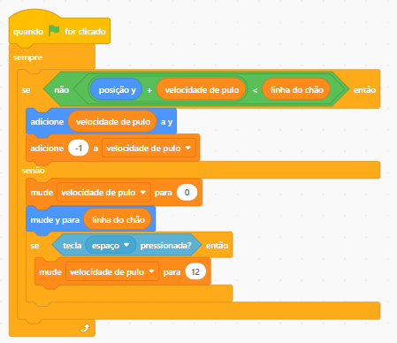

Introdução ao Dino Runner
Conceito do Jogo
Dino Runner é o jogo do dinossauro que corre sozinho por um deserto sem fim. O jogador não controla
para a frente nem para trás, o dino corre no lugar e é o mundo que passa por ele. O único comando é
pular (tecla espaço) para desviar dos cactos que vêm da direita. Quanto mais tempo
sobreviver, mais pontos. Encostou num cacto, acabou! O desafio está na velocidade e no ritmo
imprevisível dos obstáculos.
Carregando os Assets
- Carregue os sprites do jogo: dino, chão, cactos e nuvem.
- Depois, carregue o cenário de fundo.
- Posicione cada elemento no seu lugar: o chão embaixo, o dino apoiado nele e as nuvens lá no alto. Ajuste
os tamanhos se necessário.
Dica: Certifique-se de carregar todas as fantasias de cada personagem, principalmente
as do dino, que vamos usar já já!
As Quatro Fantasias do Dino
O dino tem quatro fantasias, e o jogo troca entre elas para dar vida ao personagem:
- Walk 1 e Walk 2: alternadas rapidamente, dão a impressão de que ele está
correndo.
- Normal (pernas juntas): usada enquanto ele está no ar, durante o pulo.
- Scared: aparece quando ele bate num cacto.
Posição Inicial do Dino
Ao clicar na bandeira verde e iniciar o jogo, o dino é colocado no canto esquerdo da tela,
apoiado no chão:
- Comece com a fantasia Walk 1, o dino pronto para correr.
- Posicione o dino em x: -199 (canto esquerdo) e y: -123 (em cima do chão).
POSIÇÃO INICIAL
Quando bandeira verde for clicado
➜ mude para a fantasia Walk 1
➜ vá para x: -199 y: -123
A Animação da Corrida
Vá na aba laranja de Variáveis e crie a variável
linha do chão, guardando nela o valor -123, a altura do
piso. Se o dino está nessa altura, as fantasias de caminhada se revezam; se está no ar, a
fantasia muda para Normal. Simples assim, e o personagem ganha vida!
ANIMAÇÃO DE CORRIDA
Quando bandeira verde for clicado
➜
mude linha do chão para -123
➜
sempre
se posição y =
linha do
chão então
➜ mude para a fantasia Walk 1
➜ espere 0.07 seg
➜ mude para a fantasia Walk 2
➜ espere 0.07 seg
senão
➜ mude para a fantasia Normal
Fique ligado: a variável linha do chão vai aparecer em quase
todos os scripts do dino. Ela é a "régua" que diz onde fica o piso do nosso deserto!
O Truque do Chão Infinito
O dino parece correr, mas na verdade é o chão que anda para trás! O segredo são dois
pedaços de chão iguais. Quando um sai pela esquerda, ele volta lá para a direita e começa de
novo. Sempre tem um entrando enquanto o outro sai, e o olho enxerga um chão sem fim.
A Esteira Rolante
O chão anda para trás -10 a cada vez. Quando chega bem na ponta esquerda (posição -480),
o bloco multiplica a posição por -1 e ele pula de volta para a direita. Ah, e no começo
o chão cria um clone dele mesmo, para termos os dois pedaços!
O CHÃO ORIGINAL
Quando bandeira verde for clicado
➜
vá para x: 0 y: -138
➜
crie clone de este ator
➜
sempre
➜
adicione -10 a
x
➜
se posição x <
-480 então
➜ mude x para posição x * -1
A Cópia Grudada
O clone nasce lá no canto direito da tela, bem coladinho no original, e precisa fazer
exatamente o mesmo movimento: andar -10 para a esquerda e teleportar de volta
quando passar do limite.
A CÓPIA GRUDADA
Quando eu começar como um clone
➜
vá para x: 480 y: -138
➜
sempre
➜
adicione -10 a
x
➜
se posição x <
-480 então
➜ mude x para posição x * -1
O Superpoder dos Blocos Cor-de-Rosa
A Receita com Nome
Escrevemos os mesmos blocos duas vezes, no original e no clone! Quando algo se repete, a gente pode
dar um nome a ele e chamar só pelo nome, como uma receita que você guarda e reusa.
É isso que faz a categoria "Meus Blocos": criar os seus próprios blocos!
Crie um bloco novo chamado Scroll e coloque dentro da receita ("defina") os três blocos de
movimento que estavam repetidos. Agora, nos dois scripts do chão, é só apagar o trecho repetido
e encaixar o bloco Scroll no lugar. Veja como o código fica mais limpo!
O CHÃO ORIGINAL (OTIMIZADO)
Quando bandeira verde for clicado
➜
vá para x: 0 y: -138
➜
crie clone de este ator
➜
sempre
➜ Scroll
A CÓPIA GRUDADA (OTIMIZADA)
Quando eu começar como um clone
➜
vá para x: 480 y: -138
➜
sempre
➜ Scroll
Por que os programadores amam esses blocos?
- Organização de Mestre: o código principal fica curtinho e fácil de ler — tanto o chão
original quanto o clone simplesmente ficam repetindo Scroll para sempre.
- Menos Trabalho: se um dia a gente quiser mudar como o chão anda, muda num lugar
só (na receita), e todos que usam o bloco mudam juntos.
O Pulo: A Regra da Gravidade
Chegou a parte mais importante do guia! O pulo não é uma animação pronta de "sobe e
desce". Ele nasce de uma variável: a velocidade vertical do dino. Vamos usar -1 para o peso da
gravidade e 12 para a força do pulo.
Criando e Iniciando as Variáveis
- velocidade de pulo: vá na aba laranja de Variáveis e crie essa caixinha. Ela vai
lembrar o computador se o dino está subindo (número positivo) ou caindo (número negativo).
Valor inicial = 0
INICIANDO AS VARIÁVEIS
Quando bandeira verde for clicado
➜ mude velocidade de pulo para 0
Importante: toda variável precisa ser iniciada quando o jogo começa!
Se a partida anterior terminou com o dino caindo, a velocidade de pulo ainda
guarda um número negativo — sem zerar, o dino começaria a nova partida já despencando.
Parte 1 — O Radar (Previsão do Futuro)
O bloco "se não" funciona como um radar. Ele tenta adivinhar se o dino vai passar do chão
no próximo passo, somando a posição atual com a velocidade. Se ele não for passar, o código
entende que o dino está solto no ar e continua a queda.
PARTE 1: O RADAR
Quando bandeira verde for clicado
➜
sempre
se não posição
y + velocidade de pulo < linha do
chão então
Parte 2 — Caindo com a Gravidade
Se o radar avisar que o dino está no ar, aplicamos a física! O primeiro bloco atualiza a posição
dele na tela. O segundo usa o número -1 para puxar o dino para baixo, agindo exatamente
como a força da gravidade — puxando ele cada vez mais rápido.
PARTE 2: CAINDO
➜ adicione velocidade de pulo a
y
➜ adicione -1 a velocidade de pulo (Gravidade)
Parte 3 — Pisando Firme e Pulando
Se o dino encostar no chão, o bloco "senão" entra em ação. A velocidade zera para ele não
afundar e ele é colado firmemente na linha do piso. Com os pés no chão, o jogo libera a tecla
espaço: ao apertar, usamos o número 12 para dar um impulso forte para o céu!
PARTE 3: O PULO
senão
➜
mude velocidade de pulo para
0
➜
mude y para linha do chão
➜
se tecla
espaço pressionada?
então
➜ mude velocidade de pulo para
12 (Força do Pulo)
Visão Completa do Bloco
Montado
